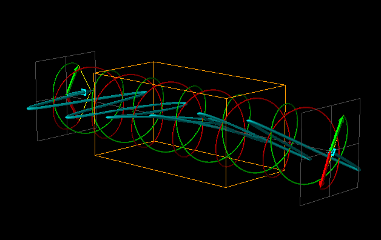

Change in Optical Rotation Due to Change in Extinction Coefficient.
Help!
Instructions!
Next!
Here wavelength of light is fixed and equal to 400nm.
Now you are changing extinction coefficient for left and circularly polarised light and see the difference in polarisation for 2 different cases.
For more information related to extinction coefficient and polarised ligh refer
Help
Choose extinction coefficient of Left and Right Circular Polarised Light
e1=0.00,e2=0.00
e1=0.00,e2=0.15
e1=0.00,e2=0.30
e1=0.15,e2=0.00
e1=0.30,e2=0.00
Choose extinction coefficient of Left and Right Circular Polarised Light
e1=0.00,e2=0.00
e1=0.00,e2=0.15
e1=0.00,e2=0.30
e1=0.15,e2=0.00
e1=0.30,e2=0.00
